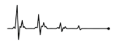

Chương 3:
An toàn và sức khỏe nghề nghiệp
Mục lục:
-
CHƯƠNG 1: HỆ THỐNG Y TẾ VÀ HỆ THỐNG KHÁM, CHỮA BỆNH TẠI HÀN QUỐC
- Tôi bị ốm nên tôi muốn đến bệnh viện khám. Tôi nên đến bệnh viện nào? Hệ thống y tế ở Hàn Quốc như thế nào?
- Trạm y tế là gì?
- Khi bị ốm, tôi phải đến cơ sở y tế nào?
- Đơn thuốc là gì?
- Khi tôi bị ốm, tôi không biết phải điều trị tại bệnh viện nào?
- Tôi bất ngờ bị thương nặng và phải đến bệnh viện gấp. Tôi phải làm gì trong trường hợp này?
- Sau khi khám, chữa bệnh tại bệnh viện, tôi có thể nhận thuốc ở đâu?
- Tôi có thể mua thuốc trực tiếp tại hiệu thuốc mà không có đơn thuốc không?
- Nếu tôi muốn sử dụng dịch vụ y tế nhưng lại không biết tiếng Hàn thì tôi phải liên lạc tới đâu?
-
CHƯƠNG 2: Bảo hiểm y tế và dịch vụ y tế
- Bảo hiểm y tế là gì?
- Làm thế nào để tham gia bảo hiểm y tế? Sự khác nhau giữa bảo hiểm y tế theo doanh nghiệp và bảo hiểm y tế của địa phương là gì?
- Trong trường hợp tôi bị mất việc hoặc nghỉ việc tại công ty cũ và thay đổi nơi làm việc thì tình trạng bảo hiểm y tế theo doanh nghiệp được đăng ký trước đó có bị thay đổi không?
- Làm thế nào để tôi xác định được mình đang tham gia bảo hiểm y tế theo doanh nghiệp hay bảo hiểm y tế của địa phương?
- Cách đóng tiền bảo hiểm y tế là gì? Sự khác nhau khi đóng bảo hiểm y tế theo doanh nghiệp và bảo hiểm y tế của địa phương là gì?
- Chuyện gì sẽ xảy ra nếu tôi không tham gia bảo hiểm y tế hoặc không đóng phí bảo hiểm y tế?
- Tôi có được giảm phí khi đóng phí bảo hiểm y tế của địa phương không?
- Quyền lợi của bảo hiểm y tế là gì?
- Sự khác nhau giữa phần chi phí điều trị được chi trả và không được chi trả trên hóa đơn viện phí là gì?
- Khi muốn được tư vấn về bảo hiểm y tế thì tôi phải liên hệ tới đâu?
- Tôi có thể tìm kiếm các thông tin về bảo hiểm y tế ở đâu?
- Khi nào thì bảo hiểm y tế của tôi hết hạn?
- Người lao động nước ngoài tại Hàn Quốc chưa đăng ký thông tin cư trú có thể sử dụng các dịch vụ y tế hay không?
-
CHƯƠNG 3: An toàn và sức khỏe nghề nghiệp
- Có chương trình giáo dục về an toàn và sức khỏe nghề nghiệp dành cho người nước ngoài di cư không?
- Tôi có thể tìm kiếm thông tin về dịch vụ an toàn lao động và sức khỏe nghề nghiệp ở đâu?
- Khi tôi gặp vấn đề về sức khỏe liên quan đến nghề nghiệp hoặc bị tai nạn lao động thì tôi phải liên liên hệ với ai/cơ quan nào?
- Bảo hiểm lao động là gì?
- Bảo hiểm tai nạn lao động là gì?
- Tôi có phải tự đăng ký tham gia bảo hiểm tai nạn lao động không?
- Làm thế nào để đăng ký hưởng trợ cấp bảo hiểm tai nạn lao động?
- Tôi gặp tai nạn khi đang làm việc. Tôi phải làm gì trong trường hợp này?
- Trong trường hợp tôi bị thương khi đang làm việc, tôi có được hưởng bảo hiểm tai nạn lao động không?
- Tôi bị thương khi đang làm việc và cần phải làm phẫu thuật. Chi phí phẫu thuật sẽ do ai chi trả?
- Môi trường làm việc hiện tại của tôi không an toàn và có hại cho sức khỏe.
- Từ sau khi bị thương trong quá trình làm việc, tôi gặp phải các di chứng từ vết thương
- Tôi bị bệnh sau một thời gian dài làm cùng một loại công việc.
- Tôi có người thân đang làm việc tại Hàn Quốc và bị tử vong trong quá trình làm việc, tôi nên liên lạc với ai?
- Nếu tôi có người thân là lao động làm việc tại Hàn Quốc và không may bị tử vong, tôi cần biết những gì?
- Tôi có người thân đang làm việc tại Hàn Quốc, tôi muốn biết Đại sứ quán Việt Nam có thể hỗ trợ gì nếu người thân của tôi tử vong trong khi đang làm việc tại Hàn Quốc?
- Tôi có người thân tử vong khi đang làm việc tại Hàn Quốc, tôi cần làm gì để đưa thi thể hay hài cốt của người thân về Việt Nam?
- Tôi bị người khác lợi dụng chức vụ cao hơn để quấy rối, bắt nạt và đối xử bất công tại nơi làm việc. Tôi phải làm gì trong trường hợp này?
- Tôi bị chủ lao động và đồng nghiệp bạo hành. Tôi phải đối phó như thế nào?
- Tôi bị thương trong lúc làm việc nhưng chủ lao động không trả phí điều trị và bồi thường tai nạn lao động cho tôi. Tôi phải làm gì trong trường hợp này?
- Quấy rối tình dục là gì?
- Cách để tố cáo hành vi quấy rối tình dục tại nơi làm việc là gì?
- Tôi bị bạo hành và tấn công tình dục, tôi có thể nhận được trợ giúp từ đâu ?
-
CHƯƠNG 4: Bệnh truyền nhiễm
- Trong trường hợp có những bệnh truyền nhiễm phổ biến như COVID-19 bùng phát, tôi có thể nhận được sự hỗ trợ gì?
- Tôi có thể tiến hành xét nghiệm COVID-19 và các bệnh cảm cúm khác ở đâu?
- Tôi có thể làm xét nghiệm lao và HIV ở đâu?
- Tôi có thể làm xét nghiệm viêm gan ở đâu?
- Khi có các triệu chứng mắc bệnh truyền nhiễm, tôi phải làm gì?
-
CHƯƠNG 5: Sức khỏe tình dục và sức khỏe sinh sản
- Tôi có thể đi khám và được tư vấn về sức khỏe tình dục và sức khỏe sinh sản ở đâu?
- Kinh nguyệt của tôi không đều, tôi phải làm sao?
- Có những phương pháp nào để phòng tránh mang thai ngoài ý muốn?
- Khi mang thai ngoài ý muốn, tôi phải làm gì?
- Tôi đã quan hệ tình dục mà không sử dụng các biện pháp bảo vệ. Tôi cần phải làm gì nếu muốn kiểm tra xem bản thân có mắc các bệnh lây truyền qua đường tình dục hay không?
- Có những biện pháp gì để phòng tránh các bệnh lây truyền qua đường tình dục?
- Làm thế nào để tôi xác định mình có mắc các bệnh lây truyền qua đường tình dục hay không? Những triệu chứng của bệnh lây truyền qua đường tình dục là gì?
- Có những cơ sở y tế nào khám, chữa bệnh liên quan tới HIV/AIDS?
- Làm thế nào để tôi kiểm tra xem bản thân có thai hay không?
- Khi có thai, tôi phải đến bệnh viện nào?
- Tôi sắp đến ngày dự sinh rồi. Tôi có thể tìm kiếm thông tin về những bệnh viện có phòng sinh ở đâu?
- Chi phí sinh con ở bệnh viện công hoặc bệnh viện tư là bao nhiêu?
- Đăng ký xin hỗ trợ chi phí mang thai – sinh sản
- Tôi có thể xin nghỉ phép để nuôi con không?
-
CHƯƠNG 6: Sức khỏe tâm thần/ tinh thần
- Tôi có thể sử dụng các dịch vụ hỗ trợ về sức khỏe tinh thần ở đâu?
- Tôi có thể được tư vấn về sức khỏe tinh thần ở đâu?
- Dạo gần đây, tôi rất nhớ nhà và gia đình. Tôi cảm thấy rất cô đơn. Tôi có thể tìm kiếm sự giúp đỡ ở đâu?
- Tôi muốn được tư vấn về chứng nghiện nhưng không biết tiếng Hàn. Tôi phải liên lạc tới đâu?
- Tôi có thể tìm kiếm thông tin về cai nghiện đồ uống có cồn, thuốc, cờ bạc ở đâu?
A. CÁC CÂU HỎI THƯỜNG GẶP VỀ SỨC KHỎE NGHỀ NGHIỆP VÀ QUYỀN LỢI CỦA NGƯỜI LAO ĐỘNG
A、關於職業健康和勞工權利的常見問題
3.1 Tôi đang làm việc tại một nhà máy sản xuất tại Đài Loan. Ngoài Bảo hiểm y tế toàn dân, tôi còn nhận được loại bảo hiểm nào khác không?
我在臺灣的一家製造廠工作。移工如何享受全民健康保險？
Ngoài Bảo hiểm y tế toàn dân, bạn còn nhận được Bảo hiểm lao động. Bảo hiểm lao động là loại bảo hiểm sẽ trả cho bạn trợ cấp thai sản, trợ cấp thương tích và bệnh tật, trợ cấp tàn tật, trợ cấp mất tích và tử vong.
Người lao động được trợ cấp thương tật, bệnh tật, tàn tật và tử vong chỉ khi những trường hợp này xảy ra liên quan đến yêu cầu công việc. Có thể xảy ra khi làm việc, tại nơi làm việc hoặc do tai nạn xảy ra khi họ đang làm nhiệm vụ hoặc không làm nhiệm vụ, trong các chuyến đi khứ hồi từ nơi ở hàng ngày đến nơi làm việc hoặc khi thực hiện một nhiệm vụ khác liên quan đến công việc. Thương tích mà bạn gặp phải trong các chuyến đi trên được coi là thương tích nghề nghiệp
除了全民健康保險，您還可以獲得勞保。勞保是一種將向您支付生育給付、傷害和疾病給付、殘疾給付、失蹤和死亡給付的保險。
被保險人在有關工作要求而發生事故時才能獲得疾病、殘疾和死亡撫恤金。例如：工作中、工作現場或由於他們在值班或不值班時發生的事故、在從日常住所到工作的往返途中或執行其他與工作相關的任務時。您在上述途中遭受的傷害被視為職災。
3.2 Tôi làm giúp việc gia đình. Người sử dụng lao động của tôi có mua Bảo hiểm lao động cho tôi không?
我是一名家庭傭工。我的僱主會為我購買勞工保險嗎？
Bảo hiểm lao động không phải là bảo hiểm bắt buộc đối với người làm giúp việc gia đình, do đó người sử dụng lao động không mua bảo hiểm lao động cho bạn. Tuy nhiên, người sử dụng lao động có trách nhiệm mua cho bạn Bảo hiểm tai nạn lao động.
不。勞工保險不是家庭傭工的強制性保險，僱主應為您購買職災保險。
3.3 Bảo hiểm tai nạn lao động là gì?
什麼是職災保險？
Bảo hiểm tai nạn lao động là loại bảo hiểm áp dụng cho người lao động bị tai nạn lao động, bệnh nghề nghiệp, được sử dụng để chi trả các quyền lợi y tế, trợ cấp thương tích, bệnh tật, trợ cấp mất khả năng lao động, mất tích và tử vong
職災保險是適用於發生職災事故或職業病的勞工的一種保險，用於醫療給付、職災給付、疾病給付、失能給付、失蹤和死亡給付。
Quyền lợi của Bảo hiểm lao động, Bảo hiểm tai nạn lao động
勞保、職災保險的保險給付
TTrợ cấp thai sản (chỉ giới hạn ở bảo hiểm lao động)生育給付（僅限勞保)
|
Người được bảo hiểm có quyền nhận một lần trợ cấp thai sản tương đương 02 tháng lương bình quân của người được bảo hiểm. Nếu sinh nhiều con trong một lần sinh thì mức trợ cấp sẽ tăng lên tương ứng. 受保人有權一次領取相當於其兩個月平均保險工資的生育津貼。生育多胞胎時，補助金按比例增加。 |
|
Trợ cấp tàn tật và bệnh tật傷殘、疾病津貼 |
|
|
Trợ cấp mất khả năng lao động失能給付 |
|
|
Trợ cấp tử vong死亡給付  |
Bảo hiểm này sẽ chi trả trợ cấp tang lễ, ngoài ra, gia đình người được bảo hiểm có thể nộp đơn xin trợ cấp tuất một lần, hoặc trợ cấp hàng năm cho người còn sống 此保險將支付喪葬津貼，此外，被保險人的家屬可以申請一次性遺屬津貼或遺屬年金給付。 |
|
Trợ cấp mất tích失蹤給付 |
Trường hợp người được bảo hiểm bị tai nạn trong khi làm nhiệm vụ dẫn đến mất tích thì được hưởng trợ cấp mất tích kể từ ngày mất tích. Quyền lợi sẽ được chi trả 03 tháng một lần vào cuối thời hạn, cho đến ngày trước khi người được bảo hiểm còn sống hoặc mất tích trong 01 năm hoặc 01 ngày trước khi người được bảo hiểm bị tuyên bố đã chết theo quy định của pháp luật. 被保險人在執勤期間發生事故導致失蹤時，自失蹤之日起領取失蹤津貼。保險金每第三個月月底支付一次， 直至被保險人生前一年或失蹤一年之日的前一天或被保險人依法宣告死亡前一天。 |
|
Trợ cấp y tế (bảo hiểm tai nạn lao động phải liên quan đến lao động)醫療給付（職災受保人必須與職業相關） |
Bảo hiểm y tế toàn dân chi trả hầu hết các chi phí y tế. Người được bảo hiểm được miễn một phần chi phí quy định trong Bảo hiểm y tế toàn dân và được trợ cấp tiền sinh hoạt khi nằm viện. 全民健保涵蓋大部分醫療費用。被保人可免繳交全民健康保險規定之部分負擔費用， 並有住院膳食費用補助。 |
|
3.4 Chúng tôi nhận được nhiều loại bảo hiểm. Sự khác biệt giữa Bảo hiểm lao động và Bảo hiểm tai nạn lao động là gì?
在各纇保險中，健保、勞保和職災保險有什麼區別？
Tại Đài Loan, cả 02 loại bảo hiểm trên đều được thiết lập để bảo vệ quyền lợi của người lao động. Tuy nhiên, đối tượng tham gia bảo hiểm bắt buộc là khác nhau, cũng như các dạng bảo hiểm khác. Các quyền lợi bảo vệ về thương tật, bệnh tật, tàn tật, điều trị y tế, tử vong và mất tích của Bảo hiểm lao động và Bảo hiểm tai nạn lao động là như nhau, có điều Bảo hiểm tai nạn lao động yêu cầu các quyền lợi liên quan đến lao động, còn bảo hiểm lao động chịu trách nhiệm bảo hiểm cho các bệnh thông thường.
在台灣，這兩種保險都是為了保護勞工而設立的。但強制投保人群資格與保險類型有所不同。雖然勞保和職災險的傷害、殘疾、醫療、死亡和失蹤的保障給付內容是相同的，只是後者要求與職業相關，而前者承保一般疾病。
Sự khác biệt giữa Bảo hiểm lao động, Bảo hiểm tai nạn lao động và Bảo hiểm y tế toàn dân
勞保、職災保險和全民健康保險的區別|
|
Bảo hiểm lao động勞保 |
Bảo hiểm tai nạn lao động職災保險 |
Bảo hiểm y tế toàn dân職災保險 |
|---|---|---|---|
Đối tượng資格 |
Hầu hết người lao động làm việc tại một công ty có nhiều hơn 05 nhân viên (trừ người làm giúp việc gia đình) 大多數勞工在勞工數超過5 人的公司工作 （家庭傭工除) |
a.所有工人，包括家庭福利工作者；公司員工人數少於5人的工人1 5歲以下的；工人；實習生、學徒、漁工。
|
Tất cả người nước ngoài (bao gồm sinh viên,vợ/chồng v.v…) cư trú hợp pháp tại Đài Loan, trừ những người có thị thực du lịch 所有合法在台居留的外國 人（包括學生,配偶等）, 持旅遊簽證者不在此項 |
Quyền lợi bảo hiểm給付 |
Thai sản, thương tích hoặc bệnh tật, dịch vụ y tế, thương tật vĩnh viễn, tử vong và mất tích 生育、傷害、醫療、殘疾、死亡和失踪 |
Thương tích hoặc bệnh tật, thương tật vĩnh viễn, dịch vụ y tế, tử vong, mất tích và các trường hợp khác 傷害、殘疾、醫療服務、死亡、失蹤人員和其他情況。 |
Dịch vụ y tế 醫療服務 |
Tổ chức chịu trách nhiệm責任機構 |
Bộ Lao động 勞動部 |
Bộ Lao động 勞動部 |
Bộ Y tếg 衛生部 |
Tổ chức thực hiện thay代辦機構構 |
Người sử dụng lao động/đơn vị môi giới 雇主/ 仲介 |
Người sử dụng lao động/đơn vị môi giới. 雇主/ 仲介 |
Đơn vị môi giới/trường học/vợ (chồng)/người hưởng lợi. 仲介/ 學校/ 配偶/ 受益人 |
3.5 Tôi đang làm công việc nhân viên phúc lợi. Tôi có thể nộp đơn xin Bảo hiểm lao động và Bảo hiểm tai nạn lao động cùng lúc được không?
我正在從事福利員工的工作。我可以同時申請勞工保險和職災保險嗎？
Không. Vì ngoài Bảo hiểm y tế toàn dân, người sử dụng lao động phải mua cho bạn Bảo hiểm lao động hoặc Bảo hiểm tai nạn lao động, tùy theo quy mô của công ty bạn đang làm việc. Nếu người sử dụng lao động có nhiều hơn 05 nhân viên, bạn sẽ được mua Bảo hiểm lao động. Nếu có ít hơn 05 nhân viên, bạn sẽ được mua Bảo hiểm tai nạn lao động.
不。除了全民健康保險外，僱主還必須為您購買勞工保險或職災保險，視您所在公司的規模而定。如果僱主有五名以上的勞工，您將有權獲得勞工保險。如果勞工少於五名，您將有權獲得職災保險。
3.6 Tôi là ngư công, làm thế nào để tôi nhận được Bảo hiểm lao động hoặc Bảo hiểm tai nạn lao động từ người sử dụng lao động?
我是漁工。我如何從僱主那裡獲得勞工保險或職災保險？
Người sử dụng lao động/cơ quan của bạn có nghĩa vụ đăng ký bạn vào hệ thống bảo hiểm lao động, bắt đầu từ ngày đầu tiên bạn làm việc. Bạn không cần phải làm bất cứ điều gì nhưng bạn có thể yêu cầu công ty của mình xác nhận rằng bạn có bảo hiểm theo hợp đồng lao động. Nếu không, bạn có thể đến quầy trợ giúp của văn phòng địa phương của Cục Bảo hiểm Lao động để tìm hiểu thêm thông tin.
從您入職的第一天起，您的雇主/機構就有義務將您納入勞工保險系統。您不需要做任何事情，但您可以要求您的公司確認您的雇傭合同下有保險。 否則，您可以前往當地勞保部辦公室的服務台瞭解更多資訊。
3.7 Ngoài Bảo hiểm y tế toàn dân, người sử dụng lao động còn mua cho tôi Bảo hiểm lao động. Nếu bị thương, tôi có cần trả phần chi phí mà người lao động phải trả không?
看來除了全民健康保險，僱主還為我投勞工保險。如果我受傷了，我需要支付部分負擔嗎？
Nếu bạn bị thương hoặc mắc bệnh liên quan đến công việc, Bảo hiểm lao động sẽ chi trả phần chi phí mà người lao động phải trả.
如果您有與職災有關的傷害或疾病，勞工保險將支付部分負擔費用。
3.8 Tôi đang làm giúp việc gia đình và tôi có Bảo hiểm tai nạn lao động. Nếu tôi bị thương do làm việc, tôi có đủ điều kiện để được hỗ trợ chi trả phần chi phí mà người lao động phải trả không?
我是一名家庭傭工，我有職災保險。如果我在工作中受傷，我是否有資格獲得援助以支付部分負擔？
Có. Do bạn là người đã được mua Bảo hiểm tai nạn lao động và bị thương do làm việc nên bạn sẽ không phải trả phần chi phí mà người lao động phải trả.
有的。由於您是職災保險的接受者且因工作受傷，因此，您不必支付部分負擔。
3.9 Làm thế nào để đăng ký nhận trợ cấp từ Bảo hiểm lao động/Bảo hiểm tai nạn lao động?
如何申請職災保險/職災保險給付?
Người sử dụng lao động của bạn có trách nhiệm bồi thường cho bạn khi sức khỏe của bạn bị tổn hại. Thông thường tổ chức môi giới lao động sẽ được yêu cầu thực hiện việc xin trợ cấp cho bạn. Tuy nhiên nếu họ không hỗ trợ, bạn vẫn có thể thực hiện theo các bước dưới đây.
雇主有責任賠償您的健康損失。通常會請勞務仲介來處理。如果他們不協助辦理,您亦可以按照以下步驟申請。
Bước 1
步驟 1Người lao động điền vào mẫu đơn xin trợ cấp và biên lai thanh toán (tải mẫu đơn từ địa chỉ https://www.bll.gov.tw/en/0014525.html).
勞⼯填寫福利申請表和付款收據（從 https://www.bli.gov.tw/en/0014525.html 地址下載表格 )Bước 2
步驟 2Người lao động gửi đơn, biên lai thanh toán, giấy khám sức khỏe, giấy chứng nhận lao động/ bảo hiểm tai nạn lao động và bảng kê thương tật vĩnh viễn trực tiếp đến Cục Bảo hiểm lao động.
勞⼯將申請表、繳費收據、體檢報告、勞動證明/勞動職業事故保險永久傷殘聲明直接寄⾄勞⼯保險局。Bước 3
步驟 3Cục Bảo hiểm lao động đánh giá tình trạng.
勞⼯保險局評估情況。Bước 4
步驟 4Cục Bảo hiểm lao động thông báo trên website kết quả đơn xin trợ cấp của bạn cho người lao động/tổ chức môi giới. Hoặc bạn có thể gọi điện cho Trung tâm Dịch vụ Cục Bảo hiểm lao động (02-23961266 số máy nhánh 3111) và cung cấp thông tin cá nhân cơ bản của mình (bao gồm tên, ngày sinh, số ARC), cũng như tên của người sử dụng lao động gần đây nhất của bạn. Bạn có thể hỏi thăm về kết quả đơn xin trợ cấp của mình.
勞動保險部在其網站上公佈您向勞⼯/經紀機構索賠的結果。您也可以致電勞⼯保險服務中⼼（02-2396 1266轉3111），提供您的個⼈基本資訊（包括姓名、出⽣⽇期、ARC號碼）以及您最近的雇主。您可以查詢您的索賠結果。Bước 5
步驟 5Bạn có thể tham khảo bộ phận nhân sự để cập nhật thêm thông tin
您可以參考 HR 了解更多資訊。Tra cứu thông tin bảo hiểm cá nhân:
查詢個人保險資訊：1.Tra cứu trực tuyến: https://edesk.bli.gov.tw/me/#/na/login
2.Tra cứu qua điện thoại:
- Trung tâm Dịch vụ Cục Bảo hiểm lao động (02-23961266 sốmáy nhánh 3111): người được bảo hiểm cần cung cấp thông tincá nhân cơ bản của mình (bao gồm tên, ngày sinh, số ARC) và tên của nơilàm việc gần đây nhất.
3.Kiểm tra tại quầy:
- a.Người được bảo hiểm trực tiếp tra cứu: Mang theo bản gốc giấy tờ tùy thân (hộ chiếu, thẻ Bảo hiểm y tế toàn dân) có ảnh của chính bạn đến bất kỳ văn phòng nào của chúng tôi để nhận thông tin đăng ký Bảo hiểm lao động ngay tại chỗ.
- b.Ủy thác cho người khác tra cứu:
Người nhận ủy thác phải chuẩn bị giấy ủy quyền (ghi rõ lý do ủy thác, tên người ủy thác, người được ủy thác, số ARC, ngày sinh, địa chỉ hộ khẩu và số điện thoại liên lạc), mang theo ARC có ảnh gốc, dấu của người ủy quyền và người được ủy quyền để nộp đơn.
1、在線查詢： https://edesk.bli.gov.tw/me/#/na/login
2、電話查詢：
- 勞工保險服務中心（02-23961266轉3111）：被保險人需提供其基本個人資訊（包括姓名、出生日期、ARC號碼）和最近工作地點的名稱。
3、臨櫃查詢：
- a.受保人直接查閱：攜帶身份證件原件（護照、全民健康保險證）及本人照片到本公司任何辦公室，當場領取勞工保險申請資訊。
- b.委託他人查閱：
受託人必須準備一份委託書（說明委託原因、委託人和受託人姓名、ARC編號、出生日 期、戶籍地址和聯繫電話），並攜帶委託人身分證明文件正本及印章以及受託人身分證或〈駕照、護照、附照片之健保卡〉正本及印章。
3.10 Bạn của tôi bị thương tại nơi làm việc, nhưng anh ấy không có Bảo hiểm lao động hay Bảo hiểm tai nạn lao động. Anh ấy nên làm thế nào?
看來除了全民健康保險，僱主還為我投勞工保險。如果我受傷了，我需要支付部分負擔嗎？
Theo Điều 59 của Đạo luật Tiêu chuẩn Lao động Đài Loan, người sử dụng lao động có trách nhiệm bồi thường cho việc điều trị y tế, mất mát do tai nạn, tàn tật/hoặc tử vong, bất kể người lao động có bảo hiểm hay không. Nhiều cơ quan và tổ chức phi chính phủ có thể hỗ trợ bạn về mặt pháp lý.
據勞動基準法第59條，無論是否有保險，雇主有責任賠償醫療、意外損失、殘疾和/或死亡。機構和許多非政府組織可以從法律角度提供協助。
Đường dây nóng
热线Để biết thêm thông tin về bảo hiểm, bạn có thể liên hệ với đường dây nóng của Văn phòng Người khuyết tật Nước ngoài Thành phố Đài Bắc như sau:
886-2-2302-6705, +886-2-2338-1600 máy nhánh 4114 (Tiếng Việt)
Giờ làm việc: 8:30 sáng đến 5:30 chiều
有關保險的更多資訊，您可以撥打臺北市外國殘疾人辦公室的熱線電話，如下所示:
886-2-2302-6705，+886-2-2338-1600 轉 4114（ 越南語 ）
工作時間：上午 8：30 至下午 5：30
Người cư trú bất hợp pháp lại Đài Loan
臺灣無證居留居民Bạn tôi đã nghỉ việc, là người lao động không có giấy tờ. Vậy anh ấy có còn đủ điều kiện để được hưởng bảo hiểm không?
我的朋友辭了職，成為一名無證勞工。他還有資格獲得保險嗎？
Khi người lao động nước ngoài không có giấy tờ hợp lệ, họ sẽ không đượcbảo hiểm và bảo vệ theo Đạo luật Tiêu chuẩn Lao động. Họ có nguy cơ phải làm những công việc nguy hiểm, có thể gây tai nạn lao động nặng nề và buôn bán người.
當外籍勞工沒有適當的身份文件時，他們將無保險並不受《勞動標準法》的保護。他們有可能從事危險的工作，這可能導致嚴重的工作事故和人口販運。
Người lao động không có giấy tờ, nếu bị bắt thì sẽ bị phạt như thế nào?
若被抓到，無證勞工將被如何處罰？
Theo Điều 73 và 74 của Đạo luật Dịch vụ Việc làm, người lao động nướcngoài mất liên lạc trong 03 ngày liên tục sẽ bị thu hồi và ra lệnh rời khỏi đất nước, không được phép làm việc tại Đài Loan. Lao động nước ngoài không đủ giấy tờ sẽ bị phạt từ 30.000 - 150.000 Đài tệ.
根據《就業服務法》第73條和第74條，連續三天失去聯繫的移工將被撤銷並責令離境，不允許在臺灣工作。無證移工將被處以新臺幣3萬元至新臺幣15萬元的罰款。
B. QUẢN LÝ SỨC KHỎE VÀ SỨC KHOẺ NGHỀ NGHIỆP
B. 健康管理與職業安全
3.11 Tôi có thể nghỉ làm nếu tôi bị bệnh hoặc bị thương không?
如果我生病或受傷，我可以請假嗎？
Có. Người lao động phải điều trị, nghỉ ngơi do nhập viện, bị thương, bệnh tật hoặc vì lý do thể chất được hưởng chế độ nghỉ phép ốm đau có hưởng lương theo quy định sau đây:
- a.Đối với điều trị ngoại trú, số ngày nghỉ ốm tối đa trong năm dưới 30 ngày.
- b.Đối với điều trị nội trú, số ngày nghỉ không quá 01 năm.
- c.Tổng thời gian nghỉ ốm nội trú và ngoại trú không quá 01 năm.
是的。勞工因住院、受傷、生病或身體原因必須接受醫療或休息的，應依照下列規定享有帶薪病假：
- a.對於非住院患者，一年內可有累計天數少於三十天之病假。
- b.住院病人，不超過一年。
- c.住院病假和非住院病假合計不得超過一年。
3.12 Người lao động xin nghỉ bệnh như thế nào?
勞工如何請病假？
Khi xin nghỉ bệnh, người lao động phải thông báo lý do và thời gian nghỉ rõ ràng từ trước bằng lời nói hoặc bằng văn bản. Tuy nhiên, trong trường hợp khẩn cấp, người lao động có thể ủy thác cho người khác xin nghỉ thay mình. Người sử dụng lao động có thể yêu cầu người lao động nộp các giấy tờ chứng minh liên quan.
工人請假時，事先應以口頭或書面說明請假理由和時間；但遇有緊急狀況，可以委託他人代請假。雇主可以要求勞工提交相關證明文件。
3.13 Người lao động nước ngoài có thể nhận được bao nhiêu trợ cấp trong thời gian nghỉ bệnh?
移工病假期間可以領多少津貼？
Nếu số ngày nghỉ ốm thông thường trong 01 năm không quá 30 ngày thì người lao động được trả 50% tiền lương. Trong trường hợp phần do Bảo hiểm lao động chi trả không đủ 50% tiền lương, người sử dụng lao động có trách nhiệm bù vào số tiền còn thiếu.Người sử dụng lao động không được khấu trừ tiền thưởng chuyên cần đối với người lao động nghỉ đám cưới, tang lễ, nghỉ ốm, nghỉ vào các ngày nghỉ theo quy định.Ngoài ra, đối với chế độ nghỉ phép hàng năm, người lao động được hưởng số ngày nghỉ phép hàng năm được trả đủ/nguyên lương như sau tuỳ theo số năm làm việc của họ, tối đa 15 ngày.
一年內計算的普通病假不超過三十天時，支付工資的50%，如果勞保支付的部分未達到。工資的50%，僱主有責任補足缺失的金額。雇主不得扣除職工休婚喪假、病假、公假的全勤獎金此外，對於年假，員工根據其工作年限有權享有以下足額帶薪年假，具體根據其工作年限而定，最多 15 天。
Trợ cấp nghỉ phép hàng năm, dựa trên số năm làm việc
依服務年限計算年假
Số năm làm việc工作年數 |
Phép năm (ngày)年假（天 |
|---|---|
|
0,5-1
|
3
|
|
1 - 2
|
7
|
|
2 - 3
|
10
|
|
3 - 5
|
14
|
|
5 - 10
|
15
|
(Đạo luật Tiêu chuẩn Lao động Đài Loan, Chương 4, Điều 38)
（臺灣勞動基準法第四章第38條）
3.14 Tôi có bị mất việc làm nếu tôi xin nghỉ phép vì ốm không?
如果我請病假，我是否有失去工作的風險？
Không. Như đã đề cập ở trên, bạn được hưởng chế độ nghỉ ốm có lương. Nếu số ngày nghỉ của bạn vượt quá mức quy định, bạn có quyền xin nghỉ phép không lương với thời gian tối đa là 01 năm. Ngoài ra, bạn còn có cơ hội nộp đơn xin trợ cấp mất khả năng lao động vĩnh viễn để bù đắp cho những tổn thất trước khi nghỉ công việc hiện tại.
不會的。如上所述，您有權享有帶薪病假。若您需要的休假天數超過津貼，您有權申請無薪休假，最長期限為一年。此外，您還有機會可以在離開目前工作之前申請永久失能給付以彌補損失。
3.15 Nếu tôi không thể làm công việc cũ do bị tai nạn lao động, công ty có thể giúp tôi tìm công việc mới ở bộ phận khác không?
如果我因為工傷不能做原來的工作，公司可以幫我在不同的部門找到新的工作嗎？
Sau khi người lao động chấm dứt việc điều trị do tai nạn lao động, người sử dụng lao động hoặc cơ quan có thẩm quyền phải hỗ trợ người lao động tìm việc làm dựa trên nguyện vọng và khả năng làm việc của người lao động.
Đối với người lao động chưa có kỹ năng nghề, cơ quan có thẩm quyền cần hỗ trợ họ tham gia học nghề và quay trở lại nơi làm việc trong thời gian sớm nhất
.Thuật ngữ “cơ quan có thẩm quyền” được đề cập trong Đạo luật sẽ là Hội đồng Lao động, Viện Hành pháp ở cấp trung ương, chính quyền thành phố ở cấp thành phố và chính quyền quận (thành phố) ở cấp quận (thành phố)
勞工因職業事故而醫療終止後，雇主或主管機關得依勞工意願及工作能力，為其提供就業協助。
對於缺乏職業技能的人員，主管機關得協助其參與職業培訓，並協助其儘早返回就業地點。
本法所稱主管機關：在中央級為行政院勞工委員會；在直轄市為直轄市政府；在縣（市）為縣（市）政府。
3.16 Trong trường hợp tôi bị tai nạn hoặc thương tật, tôi không thể tiếp tục làm việc và phải quay về Việt Nam, công ty sẽ có trách nhiệm như thế nào?
若我發生事故或受傷，導致我無法繼續工作並不得不返回越南，公司有什麼責任？
Sau khi thanh toán chi phí y tế và trợ cấp thương tật/hoặc tàn tật, người sử dụng lao động có trách nhiệm giúp đỡ bạn làm thủ tục trở về Việt Nam. Tuy nhiên, chi phí để về Việt Nam sẽ được căn cứ theo hợp đồng.
在支付醫療費用、提供傷害和/或失能給付後，雇主仍然有責任幫助您辦理返回越南的手續。 但是，返回越南的費用將基於合約。
Đường dây nóng
热线Nếu không, bạn có quyền khiếu nại đến đường dây nóng của Bộ Lao động:
1955 (Tiếng Việt)
Đường dây nóng sẽ cung cấp cho bạn thông tin để giúp bạn tiến hành khởi kiện trong trường hợp này. Xin lưu ý rằng bạn không hề vi phạm bất kỳ điều khoản nào trong hợp đồng giữa bạn và người sử dụng lao động của bạn khi làm điều này.
Thời gian làm việc: 24 giờ một ngày, 365 ngày một năm.
否則，您有權向勞動部的熱線投訴：
1955 （越南語）
熱線將為您提供資訊，以説明您在這種情況下提起訴訟。請注意，您這樣做沒有違反與僱主簽訂的合同的任何條款。
工作時間：一年365天，每天24小時
Một số tổ chức phi chính phủ có thể giúp người lao động ứng phó với các loại bệnh tật/thương tích liên quan đến lao động
可以協助勞工應對各種與工作有關的疾病/傷害的一些非政府組織。Danh sách thông tin liên hệ của một số tổ chức phi chính phủ (tiếng Việt)
非政府組織聯絡方式一覽（越南語）
Tên gọi姓稱 |
Địa chỉ (sức chứa nơi lánh nạn)地址（庇護所容量） |
Điện thoại電話號碼 |
Nội dung內容 |
Mã QRQR 圖碼 |
|---|---|---|---|---|
Trung tâm hội Tân Thị新市社會服務中心 |
Tầng 1, Số 24, Ngõ 183,Đoạn 1,đường Hòa Bình Đông,quận Đại An,thành phố Đài Bắc 台北市大安區 和平東路一段 183巷24號 1 樓 |
02-23971933#151 |
• 為受傷或無家可歸的183巷24號1 勞工提供庇護所 |
|
Hiệp hội Dịch vụ Đại chúng Đào Viên桃園群眾服務 協會 |
Tầng 4 (Văn phòng), Số 185, đoạn 2, đường Trung Hoa, quận Trung Lịch, thành phố Đào Viên (sức chứa 10 trẻ em nam/10 trẻ em nữ) 桃 園 市 中 壢區 中 華 路 二段 185號 4樓 (辦公室) (可容男生 10人/女生 10人)/p> |
03-4555550 0933908994 |
• 為受傷或無家可歸的勞工提供庇護所。 |
|
Trung tâm Dịch vụ Quốc tế Hải Tinh海星國際服務中心 |
Số 115,đường Kiến Quốc Tây, quận Diêm Trình, thành phố Cao Hùng (sức chứa trung bình 30-35 người) 高雄市鹽埕 區建國四路 115號 （ 平 均 30-35 人） |
07-5331840 07-5330239 |
• 為受傷或無家可歸或漁工漁民提供庇護所 |
|
3.17 Có bệnh viện hoặc phòng khám nào tại Đài Loan chuyên về khám sức khỏe nghề nghiệp không?
台灣是否有專門從事職業健康的醫院或診所？
Bạn có thể tham khảo danh sách các bệnh viện, hoặc phòng khám tại Đài Loan chuyên về khám sức khỏe nghề nghiệp do Trung tâm phòng ngừa và phục hồi chức năng tai nạn lao động (COAPRE) cung cấp: https://www.coapre.org.tw/certified_institutions#gsc.tab=0 (tiếng Trung)
您可參考由職業災害預防及重建中心(COAPRE)所提供的台灣專門從事職業健康的醫院、小型醫院或診所名單： https://www.coapre.org.tw/certified_institutions#gsc.tab=0 （國語）
3.18 Các yếu tố rủi ro nghề nghiệp là gì?
阿光：職業危險因素是什麼？
Một số rủi ro về sức khỏe tại nơi làm việc như: nhiệt độ, tiếng ồn, bụi, hóa chất độc hại, máy móc không an toàn, căng thẳng tâm lý... gây ra các bệnh nghề nghiệp và có thể làm trầm trọng thêm các vấn đề sức khỏe khác.
Tất cả người lao động, đặc biệt là người làm những nghề có nguy cơ cao (đã đề cập ở trên) – cần các dịch vụ y tế để đánh giá và giảm thiểu khả năng tiếp xúc với rủi ro nghề nghiệp, cũng như giám sát y tế để phát hiện sớm các bệnh và thương tích nghề nghiệp và liên quan đến công việc.
一些工作場所健康風險，如溫度、噪音、灰塵、有害化學物質、不安全 機器和心理壓力可能導致職業病，並可能加重其他健康問題。
所有勞動者 - 特別是從事高風險職業（如上所述）的人 - 都需要醫療服務來評估和減 少職業風險接觸的可能性，以及進行醫療監測以儘早期發現與工作相關的疾病和傷害。
C. THÔNG TIN VỀ KHÁM SỨC KHỎE ĐỊNH KỲ
C、關於定期健康檢查的資
3.19 Người lao động nước ngoài có nghĩa vụ phải khám sức khỏe. Vậy tôi cần thực hiện khám sức khỏe vào thời điểm nào?
我聽說外國勞工必須接受健康檢查。我什麼時候需要做健康檢查？
Có 02 hình thức khám sức khỏe định kỳ cho người lao động nước ngoài: Một là, khám sức khỏe cho người nước ngoài được tuyển dụng làm việc, được giám sát bởi Bộ Y tế và Bộ Lao động. Hai là, khám sức khỏe tổng quát và chuyên sâu do Bộ Lao động giám sát.
Khám sức khỏe cho người nước ngoài được tuyển dụng làm việc là yêu cầu bắt buộc đối với người lao động nước ngoài. Hãy theo dõi lịch khám sức khỏe để tham gia khám sức khỏe cho người nước ngoài được tuyển dụng làm việc.
外國勞工的定期健康檢查有兩種類型：一種是受僱外國人的體檢，由衛生部和勞動部監督。第二種是在勞動部監督下進行的一般勞工體檢和特殊作業危害檢查。
對受雇外國人進行體檢具強制性，請按照體檢時程表參加。
Lịch khám sức khỏe cho người nước ngoài được tuyển dụng làm việc
受雇外國人體檢時程表|
|
Thời gian khám sức khỏe cho người nước ngoài được tuyển dụng làm việc應聘工作的外國人體檢時間 |
|---|---|
Trước khi đến抵達前 |
3 tháng trước khi nộp đơn xin visa lao động 申請工作簽證前3個月 |
Lần 1第一次 |
3 ngày sau khi đến 抵達後3天 |
Lần 2第二次 |
6 tháng sau lần 1 (trong 30 ngày trước và sau thời điểm này) 第一次後6個月（在此時間點前後30天） |
Lần 3第三次 |
18 tháng sau lần 1 (trong 30 ngày trước và sau thời điểm này) 第一次後 18 個月（在此時間點前後 30 天） |
Lần 4第四次 |
30 tháng sau lần 1 (trong 30 ngày trước và sau thời điểm này) 第一次後 30 個月（在此時間點前後 30 天） |
3.20 Nội dung khám sức khỏe bao gồm những gì?
健康檢查包括哪些項⽬？
Nội dung khám sức khỏe bao gồm các hạng mục sau:
健康檢查包括以下項目:
a.Chụp X-quang ngực để chẩn đoán bệnh lao
a.結核病胸部 X 光檢查
b.Xét nghiệm huyết thanh học để chẩn đoán bệnh giang mai
b.梅毒⾎清學檢測
c.Kiểm tra thể chất
c.體格檢查
d.Xét nghiệm phân để tìm ký sinh trùng trong đường ruột
d.糞便檢查腸道寄⽣蟲
e.Chứng nhận dương tính với kháng thể sởi và rubella hoặc chứng nhận đã tiêm vắc xin sởi và rubella
e.⿇疹和德國⿇疹抗體陽性證明或⿇疹和德國⿇疹疫苗接種證明
f.Xét nghiệm bệnh Hansen
f.漢森病檢查
Để biết thêm thông tin, vui lòng liên hệ với Trung tâm kiểm soát và phòng ngừa dịch bệnh (bằng tiếng Trung) hoặc công ty / đơn vị trung gian của bạn. http://www.cdc.gov.tw/Foreigner/Index/RnhidFpzZkZVUGpId1JnQ01Fc1ptdz09 (tiếng Trung)
如需近一步訊息，請諮詢疾管局（國語或英文）或您的公司/仲介： http://www.cdc.gov.tw/Foreigner/Index/RnhidFpzZkZVUGpId1JnQ01Fc1ptdz09 （國語）
3.21 Khám sức khỏe tổng quát và khám sức khỏe đặc biệt bao gồm những nội dung khám nào? (cả nam giới và nữ giới)
一般健康檢查和特殊健康檢查包括哪些檢查？（男女）
Ngoài tham gia khám sức khỏe cho người nước ngoài được tuyển dụng làm việc, người lao động còn có thể cần khám sức khỏe tổng quát/hoặc khám sức khỏe đặc biệt (đối với người lao động có thể tiếp xúc với các chất độc hại).
Đường link bên dưới giúp bạn kiểm tra xem mình có đang tiếp xúc với môi trường làm việc nguy hiểm hay không, kèm các mục khám sức khỏe tương ứng (bằng tiếng Trung). https://blog.104.com.tw/wp-content/uploads/2023/07/04113431/附表十特殊體格檢查、健康檢查項目表.pdf
除了受聘僱外國人健康檢查 之外，員工可能還需要進行一般健康檢查和/或特殊健康檢查（針對可能接觸危險物質的勞工）。
下面鏈接提供您檢視是否可能接觸危險工作環境以及相應的健康檢查項目（國語）
https://blog.104.com.tw/wp-content/uploads/2023/07/04113431/附表十特殊體格檢查、健康檢查項目表.pdf （國語）
3.22 Chúng tôi quan tâm đến các bệnh của phụ nữ. Người lao động nước ngoài có thể bổ sung thêm nội dung khám, ví dụ như tầm soát ung thư cho phụ nữ, khi khám sức khỏe tổng quát không?
我們關注女性疾病。移工在一般健康檢查時是否可以預約如癌症篩檢等更多檢查項目？
Có. Đối với những nội dung khám không nằm trong khám sức khỏe tổng quát, chẳng hạn như xét nghiệm phết tế bào cổ tử cung (tầm soát ung thư cổ tử cung), bạn có thể tự trả thêm chi phí để khám bổ sung các nội dung đó tại phòng khám hoặc bệnh viện.
是的，對於一般健康檢查範圍之外的項目，例如子宮頸抹片檢查（子宮頸癌症篩查），您可在診所或醫院另外付費。
3.23 Khám sức khỏe định kỳ có mất phí không?
定期健康檢查需要付費嗎？
Có, chi phí khám sức khỏe cho người nước ngoài được tuyển dụng làm việc là khoảng 1.500 - 2.000 Đài tệ mỗi lần, tùy theo bệnh viện.
Chi phí khám sức khỏe tổng quát và đặc biệt thường do nhân viên mới được tuyển dụng và người sử dụng lao động thương lượng để xác định. Đối với người lao động đang làm việc, chi phí sẽ do người sử dụng lao động chi trả.
是的，受雇的外國人的體檢費用約為每人新臺幣 1,500 至 2,000 元不等，根據不同醫院而定。
一般和特殊體檢的費用通常由新入職勞工與僱主協商確定。對於在職勞工者，費用將由僱主支付。
Sự khác biệt về chi phí khám sức khỏe cho người lao động mới tuyển dụng và người lao động đang làm việc
新進員工和現任員工的健康檢查費用負擔區別|
|
Người lao động mới新進員工 |
Người lao động đang làm việc現任員工 |
|---|---|---|
Khám sức khỏe tổng quát一般勞工體檢 |
||
Thời gian時間 |
Khi tuyển dụng 招募時 |
< 65 tuổi: Hàng năm 40-65 tuổi: 3 năm một lần; < 40 tuổi: 5 năm một lần < 65歲：每年 40-65歲：每3年一次； < 40歲：每5年一次 |
Ai phải thực hiện?誰需要做？ |
Mọi người lao động mới 所有新進員工 |
Mọi người lao động đang làm việc 所有員工 |
Chi phí費用 |
Người lao động mới và người sử dụng lao động thương lượng 所有新進員工 |
Người sử dụng lao động chi trả 雇主支付 |
Khám sức khỏe đặc biệt特殊作業危害檢查 |
||
Thời gian時間 |
Khi tuyển dụng 招募時 |
Hàng năm 每年 |
Ai phải thực hiện?誰需要做？ |
Người lao động làm những công việc có mức độ rủi ro cao 潛在高危險工作員工 |
Người sử dụng lao động chi trả 雇主支付 |
Chi phí費用 |
Người lao động mới và người sử dụng lao động thương lượng 所有新進員工 |
Người sử dụng lao động chi trả 雇主支付 |
3.24 Bạn tôi đã nghỉ việc và trở thành một người lao động không có giấy tờ. Vậy bạn tôi có được nhận bảo hiểm y tế nào không?
我的朋友辭職了，成為無證勞工。他仍然有資格獲得任何健康保險嗎？
Khi người lao động nước ngoài không có giấy tờ, họ sẽ không được bảo hiểm y tế và bảo vệ theo Đạo luật Tiêu chuẩn Lao động. Họ phải chịu rủi ro cao hơn về môi trường làm việc nguy hiểm và nạn buôn người.
當國際勞工成為無證勞工時，他們將不能獲得《勞動標準法》規定的健康保險和保護。他們將面臨危險工作環境和人口販運的風險。
3.25 Người lao động bất hợp pháp sẽ bị phạt như thế nào nếu bị bắt?
非法勞工如被抓獲，將如何處罰？
Theo Điều 73 và 74 của Đạo luật Dịch vụ Việc làm, giấy phép lao động đối với người lao động nước ngoài mất liên lạc trong 03 ngày liên tiếp sẽ bị thu hồi và người lao động sẽ bị lệnh rời khỏi đất nước và không được phép làm việc tại Đài Loan. Người lao động nước ngoài không có giấy tờ cũng có thể bị phạt từ 30.000 - 150.000 Đài tệ.
根據《就業服務法》第73條和第74條，連續3天失去聯繫的移工的工作證將被吊銷，勞工將被勒令離開本國，不允許在臺灣工作。無證移工也可被處以新臺幣3萬元至15萬元不等的罰款。
Đường dây nóng
热线Nếu bạn có nguy cơ bị tấn công tình dục, vui lòng gọi [Đường dây nóng bảo vệ phụ nữ và trẻ em 113] (miễn phí 24 giờ) Tiếng Việt (nhấn phím 2).
如果您面臨性侵害危險，請撥打【113婦女兒童保護專線】（24小時免費） 越南語（按 2）。
D. BỊ QUẤY RỐI, BẮT NẠT VÀ ĐỐI XỬ BẤT CÔNG TẠI NƠI LÀM VIỆC
D. 在工作場所受到騷擾、霸凌和不公平對待
Quấy rối tình dục là hành vi sử dụng lời nói hoặc hành động liên quan đến tình dục khiến bạn cảm thấy khó chịu. Các cá nhân thuộc giới tính nào cũng có thể là mục tiêu của quấy rối tình dục. Ngoài ra, hành vi hắt hủi một người tại nơi làm việc sau khi người đó yêu cầu dừng thực hiện những lời nói và hành động liên quan đến tình dục cũng được coi là quấy rối tình dục.
Lạm dụng quyền lực là hành vi bạo lực bằng lời nói hoặc hành động quá mức cần thiết của người có vị trí công việc cao hơn đối với người có vị trí công việc thấp hơn, khiến cho người đó cảm thấy sợ hãi và không muốn đi làm.
性騷擾是指使用與性有關的言語或行為，使您感到不適。任何性別的人都可能成為性騷擾的目標。在工作場所排擠此人也被視為性騷擾。
濫用權力是指職位較高者對職位較低者的言語或行為暴力過度，使其感到恐懼而不想上班。
3.26 Tôi làm giúp việc gia đình. Khi tôi đang làm việc, con trai người chủ thuê tôi thường cố tình chạm vào mông và hẹn tôi đi chơi sau giờ làm việc. Vậy đây có phải là quấy rối tình dục không? Tôi nên làm gì nếu bị quấy rối tình dục?
我是一名家庭傭工。當我工作的時候，雇主的兒子經常無謂地摸我屁股，約我下班後出去。那麼這算是性騷擾嗎？如果我受到性騷擾，我該怎麼辦？
Quấy rối tình dục có thể là tội hình sự theo luật pháp Đài Loan.
Quấy rối tình dục là bất kỳ hành vi liên quan đến tình dục hoặc giới tính, ví dụ một người có lời nói, cử chỉ hoặc hành động có xu hướng tình dục, được thực hiện với người khác trái với ý muốn của người đó.
Trong trường hợp của bạn, nếu bạn thực sự không thích, đã nhắc và từ chối, thì con trai của người chủ thuê đã quấy rối tình dục.
Dưới đây là các bước bạn có thể thực hiện nếu bị quấy rối tình dục:
1.Tại Đài Loan, việc xác định hành vi quấy rối tình dục là dựa trên việc “trái với ý muốn của người khác”, do đó, bạn cần nói rõ với kẻ quấy rối rằng bạn không thích hành vi này. Tốt nhất là bạn nên có bằng chứng (video, tin nhắn hoặc nhân chứng v.v...) để hỗ trợ cho lời nói của bạn.
2.Thu thập bằng chứng, như giọng nói, hình ảnh, bản ghi âm cuộc trò chuyện, dấu vân tay, các bằng chứng sinh hóa như xét nghiệm thương tích hoặc DNA v.v. của cả hai bên.
3.Tìm tư vấn pháp lý và trình báo cho cảnh sát càng sớm càng tốt.Để biết thêm thông tin, vui lòng truy cập https://www.mohw.gov.tw/lp-122-2.html (Tiếng Anh)
根據臺灣法律，性騷擾可能構成刑事犯罪。
性騷擾是指任何違反他人意願而向他人實施與性或性別有關之行為，在您的情況下，若您確實不喜歡他的行爲、曾經警告並拒絕時，雇主兒子的行為很有可能已經構成性騷擾。
如果您受到性騷擾，可以採取以下。
步驟：
1.在台灣，性騷擾的成立是以「違背他人意願」為條件的，因此，你需要明確告訴騷擾者你不喜歡這種行為。最好有證據（記錄、文字或證人等）來支持你的主張。
2.收集證據，例如雙方的語音、圖片，對話紀錄、指紋，驗傷或 DNA 等生化證據。
3.尋求法律顧問，盡快向警方報案。欲了解（更英多語信）息，請查看鏈接
https://www.mohw.gov.tw/lp-122-2.html
3.27 Tôi nên làm gì nếu bị cưỡng hiếp?
當我被強暴時該怎麼辦？
Bạn nên tham khảo các bước sau:
1. Giữ bình tĩnh: Đừng khiêu khích kẻ phạm tội tình dục. Cố gắng giữ cho kẻ cưỡng hiếp bình tĩnh để tránh tình hình trở nên tồi tệ hơn.
2. Bảo vệ bản thân: Các bộ phận đặc biệt quan trọng trên cơ thể: đầu, mặt, bụng, ngực.
3. Kêu cứu: Thu hút sự chú ý của người khác nếu có thể.
4. Nhanh chóng rời khỏi hiện trường: Tìm sự giúp đỡ từ hàng xóm hoặc Trung tâm phòng chống lạm dụng tình dục tại địa phương nếu có thể.
5. Trình báo với cảnh sát: Đến đồn cảnh sát gần nhất và yêu cầu cảnh sát đưa bạn đến bệnh viện hoặc nơi lánh nạn.
6. Trình báo vụ việc và mô tả những đặc điểm của thủ phạm cho cảnh sát.
7. Không di chuyển hoặc chạm vào bất cứ thứ gì trong hiện trường.
8. Không thay quần áo, nên mặc áo jacket hoặc áo khoác.
9. Tìm cách lưu giữ mẫu vật (tinh dịch hoặc tóc) của thủ phạm.
10. Bạn nữ nên uống thuốc tránh thai khẩn cấp (theo đúng hướng dẫn)
11. Bạn nên đến bệnh viện để được chẩn đoán và điều trị, đây sẽ là bằng chứng của vụ tấn công.
您應考慮以下步驟：
1. 保持冷靜：不要激怒性犯罪者。盡量讓施暴者保持冷靜，以免情況變得更糟。
2. 保護自己：身體特別重要的部位：頭部、臉部、腹部、胸部。
3. 大聲呼救：引起別人的注意。
4. 迅速離開現場：向鄰居或當地性虐待預防中心尋求協助。
5. 去警察局報案：去最近的警察局，請警察幫忙帶你去醫院或避難所。
6. 向警方報告事件並描述肇事者的特徵。
7. 請勿移動或觸摸場景中的任何物品。
8. 不要換衣服，應該穿上夾克或外套。
9. 設法保存肇事者的標本（精液或頭髮）。
10. 您應該服用緊急避孕藥（嚴格按照說明）
11. 您應該去醫院接受治療，這將作為攻擊的證據
3.28 Nếu tôi làm sai, thường bị quản lý đấm, đá.Đây có phải là điều bình thường tại Đài Loan không?
若我做錯了什麼，我的經理就會對我拳打腳踢。這在臺灣正常嗎？
Đây được coi là hành vi bắt nạt/ngược đãi thể chất tại nơi làm việc. Đây là điều không nên xảy ra tại nơi làm việc.
Ngoài việc bảo vệ mình tại chỗ, điều quan trọng nhất là thu thập chứng cứ. Mặc dù bắt nạt tại nơi làm việc thường diễn ra một cách bí mật và rất khó chứng minh, nhưng không phải là không thể. Bạn nên học cách sử dụng chức năng ghi âm và quay video của các thiết bị di động như điện thoại di động, hoặc nhờ đồng nghiệp, cấp trên, cấp dưới, thành viên gia đình hoặc bạn bè làm nhân chứng.
Tại Đài Loan, tội gây thương tích là tội không thể bị truy tố nếu người bị hại không khiếu nại. Người bị hại cần nộp đơn khởi kiện lên tòa án trong vòng 06 tháng.
Cần lưu ý rằng khi người lao động cung cấp dịch vụ lao động, người sử dụng lao động có nghĩa vụ thực hiện các biện pháp phòng ngừa cần thiết để bảo vệ an toàn tính mạng, cơ thể, sức khỏe của người lao động. Khi bị bắt nạt/lạm dụng tại nơi làm việc,người lao động có thể yêu cầu người sử dụng lao động bồi thường cho những tổn thất mà người lao động phải gánh chịu, như chi phí y tế do thương tổn về thể chất và tinh thần, mất khả năng lao động, thậm chí cả các khoản tiền bồi thường do tổn thương tinh thần.
這可能被視為工作場所的欺淩/身體虐待。這是工作場所不應該發生的事情。
除了現場保護自己外，最重要的是收集證據。雖然職場霸凌往往以隱密的方式呈現，很難舉證，但並 非不可 能。善用手機等行動裝置的錄音、錄影功能，或向同事、上級、下屬、家人或朋友尋求證人，都會有所幫助。傷害罪在台灣是告訴乃論罪。受害人需要在6個月內向法院提起訴訟。
值得注意的是，雇主在勞工提供勞務時有義務採取必要的預防措施，以保護勞工的生命、身體、健康安全。僱員在職場上遭受霸凌/虐待時，可以向雇主要求損害賠償員工所遭受的損失，如因身心創傷而產生的醫 療費用、失去勞動能力，甚至精神痛苦的慰問金等。
Đường dây nóng
热线Nếu bạn có nguy cơ bị tấn công tình dục, vui lòng gọi [Đường dây nóng bảo vệ phụ nữ và trẻ em 113] (miễn phí 24 giờ) Tiếng Việt (nhấn phím 2).
如果您面臨性侵害危險，請撥打【113婦女兒童保護專線】（24小時免費） 越南語（按 2）。
3.29 Tôi thường bị quản lý nhà máy mắng là kẻ vô dụng và nên bị đưa về Việt Nam. Mỗi lần bị mắng, tôi rất chán nản. Tình trạng này có phổ biến ở Đài Loan không?
我工廠的經理經常罵我沒用，應該被送回越南。每次被罵，我都覺得很鬱悶。這種情況在臺灣常見嗎？
Tình trạng này có thể được coi là hành vi ngược đãi tinh thần, và không nên xảy ra tại nơi làm việc ở Đài Loan. Các hình thức ngược đãi tinh thần khác bao gồm:
a.Bắt nạt, làm bạn xấu hổ ở nơi công cộng hoặc trước mặt gia đình, bạn bè hoặc đồng nghiệp;
b.Đe dọa làm hại bạn, vật nuôi, con cái, hoặc những người khác quan trọng đối với bạn.
c.Lan truyền tin đồn về bạn hoặc cô lập bạn với đồng nghiệp khác.
這種行為可以被認為是精神虐待，不應該發生在臺灣的工作場所。其他形式的情感虐待包括：
a.在公共場合或家人、朋友或同事面前欺淩、讓您難堪;
b.威脅要傷害您、您的寵物、您的孩子或其他對您重要的人。
c.散佈關於您的謠言或將您與其他同事孤立開來。
Nếu bạn gặp phải bất kỳ hình thức quấy rối nào (ví dụ: quấy rối tình dục, ngược đãi thể chất và ngược đãi tinh thần) và không thể nhận được sự hỗ trợ đó từ người sử dụng lao động, bộ phận nhân sự cũng như cơ quan tuyển dụng, bạn có thểliên hệ với đường dây nóng dưới đây để được tư vấn.
若您遇到任何形式的騷擾（例如性騷擾、身體虐待和精神虐待），並且無法從您的雇主、人力資源部門以及招聘機構獲得支援，您可以聯繫以下熱線尋求建議。
Danh sách các trung tâm tư vấn cho người lao động nước ngoài (tiếng Việt, làm việc từ thứ Hai đến thứ Sáu, từ 8h30 sáng đến 17h30 chiều)
移工諮詢服務中心名單（越南語，週一至週五：上午 8:30 至下午 17:30）
Trung tâm tư vấn cho người lao động nước ngoài外籍勞工諮詢服務中心 |
Đường dây nóng熱線 |
|---|---|
Thành phố Đài Bắc台北市 |
0223381600 |
Thành phố Cao Hùng高雄市 |
07-8117543 07-8314485 |
Thành phố Tân Bắc新北市 |
0289659091 0289651044 |
Thành phố Đào Viên桃園市 |
03-3344087 03-3341728 |
Thành phố Tân Trúc新竹市 |
03-5320674 |
Huyện Miêu Lật苗栗縣 |
037-559058 037-370448 |
Thành phố Đài Trung臺中市 |
0422289111 |
Huyện Nam Đầu南投縣 |
049-2238670 |
Huyện Chương Hóa彰化縣 |
04-7297226 |
Huyện Vân Lâm雲林縣 |
05-5338087 05-5338086 |
Huyện Gia Nghĩa嘉義縣 |
05-3621289 |
Thành phố Gia Nghĩa嘉義市 |
05-2162633 |
Thành phố Đài Nam台南市 |
06-2951052 06-2991111 06-6328407 |
Huyện Bình Đông屏東縣 |
08-7510894 |
Thành phố Cơ Long基隆市 |
02-24278683 |
Huyện Nghi Lan宜蘭縣 |
03-9254040 |
Huyện Hoa Liên花蓮縣 |
038-239007 038-220931 038-232582 |
THuyện Đài Đông台東縣 |
089-359740 |
Huyện Bành Hồ澎湖縣 |
06-9267248 |
Huyện Kim Môn金門縣 |
082-373291 |
Huyện Liên Giang連江縣 |
0836-22381 |